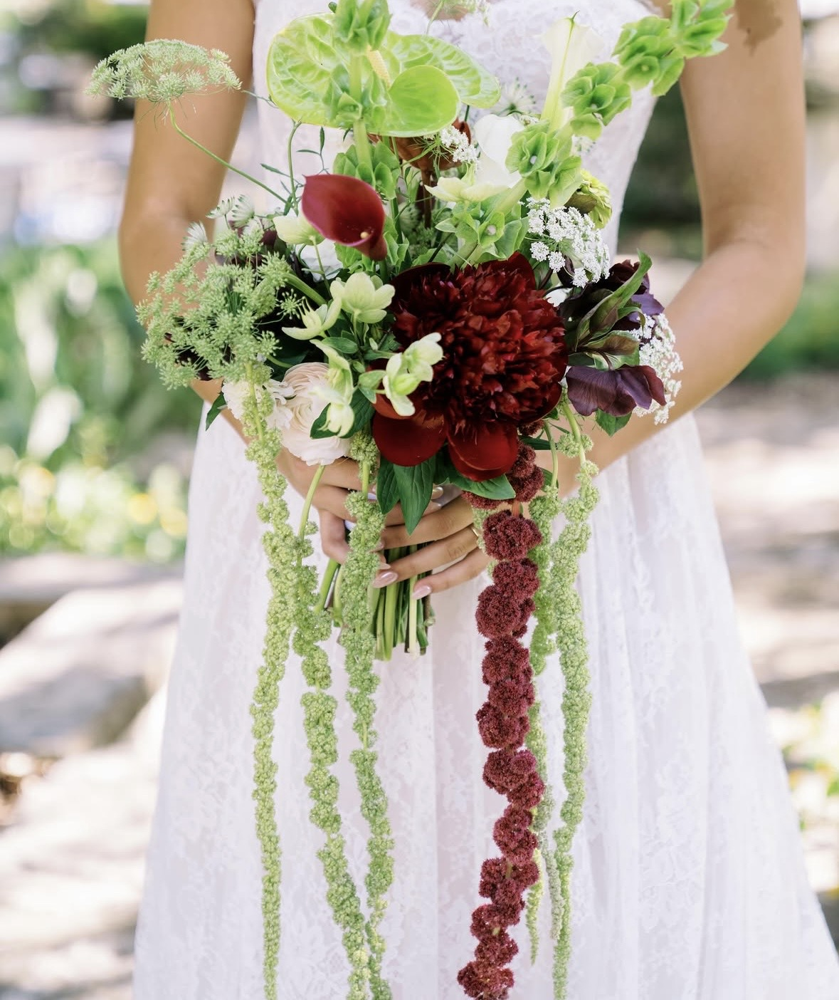

Grown & Designed in TexasWelcome
Flowers, the Way
Texas Grows Them
A working flower field, a roadside farmstand, hands-on workshops, and florals for the days that matter — all grown and designed under one wide open sky.
Texas Sky Florals began in backyard gardens and grew into rows of zinnias, cosmos and sunflowers raised in the summer sun. Every stem is chosen with intention and guided by what the season is giving.